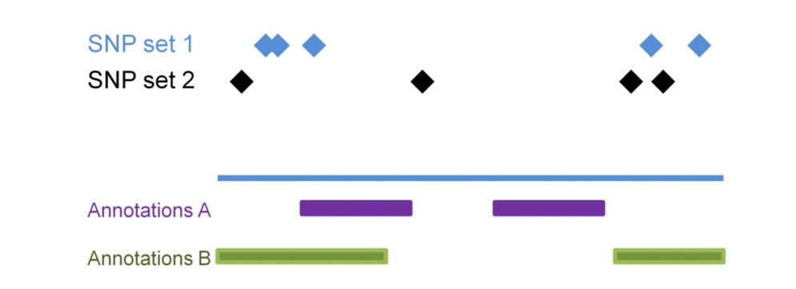
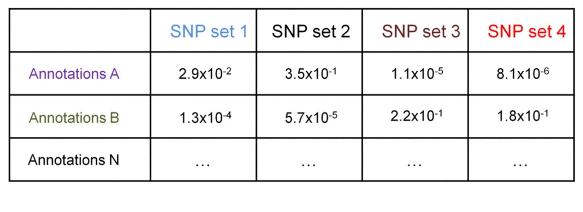

Epigenomic similarity analysis results
The epigenomic similarity analysis estimates similarity among the sets of SNPs based on their enrichment within regulatory landscapes. Consider 3 sets of SNPs:

SNP sets 1 & 2 are enriched in Genomic annotations B but not in A. SNP seta 3 & 4 are similarly enriched in Genomic annotations A but not in B. Testing each SNP set against additional genomic annotations will construct the SNP set-specific epigenomic enrichment profile of the transformed enrichment p-values.

We perform pair-wise comparison of SNP set-specific epigenomic enrichment profiles, construct an MxM matrix of Pearson's correlation coefficients (PCCs) and visualize it as a heatmap. For our example, the epigenomic similarity heatmap may look like:

Red/green gradient highlights the level of strong/weak epigenomic similarity, respectively, among the SNP sets. Naturally, an epigenomic profile of a set of SNPs compared with itself will show perfect similarity - therefore, the PCCs on the diagonal of the epigenomic similarity heatmap are equal to 1 (and are bright red in color).
We can further identify if the significance of enrichment is statistically different between groups of SNP set 1 & 2 vs. SNP set 3 & 4. This may be useful when comparing enrichment profiles of groups of SNP sets from different individuals. This comparison may answer questions like "Which epigenomic elements are associated with patient-specific SNPs and not with SNPs in healthy population?", or "Are there groups of patients with SNPs differentially associated with certain epigenomic elements, which elements?".
Consider a matrix of -log10-transformed enrichment p-values - they can be compared between the groups using t-test. Assuming standard deviation of the transformed p-values within the groups is 0.8, we need 6x6 groups to detect 2-fold difference at 0.05 significance level at 90% power. This 2-fold difference may indicate SNPs in one group have no associations with a genomic annotation (transformed p-values are 0, or non-transformed are 1), while SNPs in another group have statistically significant associations (transformed p-values are 2, or non-transformed are 0.01).
